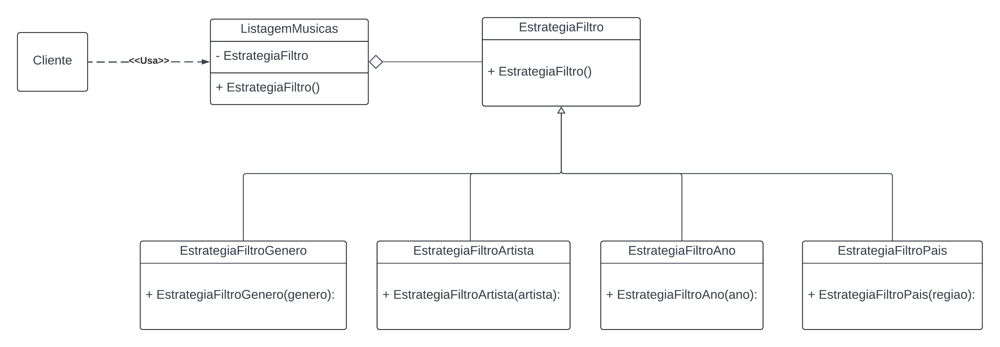

3.3.1. Strategy
"O padrão Strategy sugere que você pegue uma classe que faz algo específico em diversas maneiras diferentes e extraia todos esses algoritmos para classes separadas chamadas estratégias.
A classe original, chamada contexto, deve ter um campo para armazenar uma referência para um dessas estratégias. O contexto delega o trabalho para um objeto estratégia ao invés de executá-lo por conta própria.
O contexto não é responsável por selecionar um algoritmo apropriado para o trabalho. Ao invés disso, o cliente passa a estratégia desejada para o contexto. Na verdade, o contexto não sabe muito sobre as estratégias. Ele trabalha com todas elas através de uma interface genérica, que somente expõe um único método para acionar o algoritmo encapsulado dentro da estratégia selecionada.
Desta forma o contexto se torna independente das estratégias concretas, então você pode adicionar novos algoritmos ou modificar os existentes sem modificar o código do contexto ou outras estratégias."
Fonte: Refactoring Guru
Introdução
Para o aplicativo, foi decidido por usar o padrão "Strategy". O Strategy é um padrão de projeto comportamental que permite que você defina uma família de algoritmos, coloque-os em classes separadas, e faça os objetos deles intercambiáveis.¹ Este padrão mostrou-se o mais adequado para uso e implementação, pois o mesmo permite definir uma família de algoritmos, encapsular cada um deles e torná-los intercambiáveis. Essas características atendem perfeitamente aos critérios de decisão.
Metodologia
Para a criação do strategy o grupo formou um trio (João Vítor, Carlos Godoy e Carlos Eduardo), que juntou em uma chamada de voz virtual para implementar o Padrão de Projeto comportamental Strategy, nos utilizamos como referência os slides da professora Milene Serrano, suas vídeo aulas gravadas online, a plataforma refactoring.guru, assim como alguns trabalhos antigos da disciplina como 2023.1_G1_ProjetoMercadoLivre
GoFs Comportamentais Strategy

Figura 1: Diagrama de classes do padrão Strategy (Fonte: João Vítor, Carlos Godoy e Carlos Eduardo, 2024)
Link para visualização Lucidchart
implementação
Estratégia Filtro
abstract class EstrategiaFiltro {
List<Musica> EstrategiaFiltro(List<Musica> listaMusicas);
}
Estratégia concreta Filtro por genero
class EstrategiaFiltroGenero implements EstrategiaFiltro {
final String genero;
EstrategiaFiltroGenero(this.genero);
@override
List<Musica> filtrar(List<Musica> listaMusicas) {
return listaMusicas.where((musica) => musica.genero.toLowerCase() == genero.toLowerCase()).toList();
}
}
Estratégia concreta Filtro por artista
class EstrategiaFiltroArtista implements EstrategiaFiltro {
final String artista;
EstrategiaFiltroArtista(this.artista);
@override
List<Musica> filtrar(List<Musica> listaMusicas) {
return listaMusicas.where((musica) => musica.artista.toLowerCase() == artista.toLowerCase()).toList();
}
}
Estratégia concreta Filtro por ano de lançamento
class EstrategiaFiltroAno implements EstrategiaFiltro {
final int ano;
EstrategiaFiltroAno(this.ano);
@override
List<Musica> filtrar(List<Musica> listaMusicas) {
return listaMusicas.where((musica) => musica.ano == ano).toList();
}
}
Estratégia concreta Filtro por pais
class EstrategiaFiltroPais implements EstrategiaFiltro {
final String pais;
EstrategiaFiltroPais(this.pais);
@override
List<Musica> filtrar(List<Musica> listaMusicas) {
return listaMusicas.where((musica) => musica.pais.toLowerCase() == pais.toLowerCase()).toList();
}
}
Conclusão
O padrão de projeto comportamental Strategy mostra-se útil em situações em que é necessário definir diferentes maneiras de abordar uma mesma solução como por exemplo no nosso caso o filtro de música. Outros contextos em que o padrão Strategy pode ser aplicado são: pagamento, ordenação, entre outros. A implementação do padrão Strategy foi realizada com sucesso, e o grupo conseguiu entender a importância de se utilizar padrões de projeto para facilitar a manutenção e a escalabilidade do código.
Referências Bibliográficas
¹ Refactoring Guru. Strategy Disponível em: https://refactoring.guru/design-patterns/strategy. Acesso em: 24 julho 2024.
Bibliográfia
Refactoring Guru. Strategy Disponível em: https://refactoring.guru/pt-br/design-patterns/strategy. Acesso em: 24 julho 2024.
Histórico de Versão
| Versão | Data | Descrição | Autores | Revisores |
|---|---|---|---|---|
| 1.0 | 23/06/2024 | Primeira versão do GoF Comportamental Strategy | João Vítor, Carlos Eduardo e Carlos Godoy | Vinícius Mendes, Link da revisão |
| 1.1 | 24/06/2024 | explicação do Strategy, correção no modelo, correção de portugues | João Vítor | Israel Thalles, Luiz Pettengill, Henrique Hida (Link da revisão) |
| 1.2 | 25/07/2024 | Correção de ortografia | Ana Luíza |